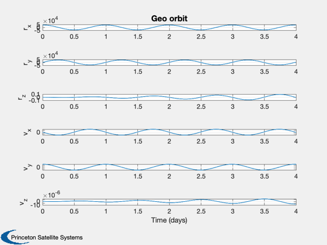

Using a spherical harmonic gravity model
See also: LoadGEM, RHSGeoHarm, RK4, TimeLabl, Plot2D
%-------------------------------------------------------------------------
%-------------------------------------------------------------------------- % Copyright (c) 2011 Princeton Satellite Systems, Inc. % All Rights Reserved. % Since version 10. %-------------------------------------------------------------------------- % Load the GEM Gravity model %--------------------------- [d.s, d.c, d.j, d.mu, d.a] = LoadGEM( 1 ); d.isNormalized = true; % Number of harmonics to use %--------------------------- d.nN = 3; d.nM = 3; % Initial Julian Date (needed for earth rotation %----------------------------------------------- d.jD0 = 2455741.38675757; % Initial state %-------------- r = [42167;0;0]; v = [0;3.074;0]; x = [r;v]; dT = 100; n = 4*24*3600/dT; xPlot = zeros(6,n); t = 0; for k = 1:n xPlot(:,k) = x; x = RK4('RHSGeoHarm', x, dT, t, d ); t = t + dT; end [t,tL] = TimeLabl( (0:n-1)*dT ); Plot2D( t, xPlot, tL, {'r_x' 'r_y' 'r_z' 'v_x' 'v_y' 'v_z'},'Geo orbit'); %--------------------------------------